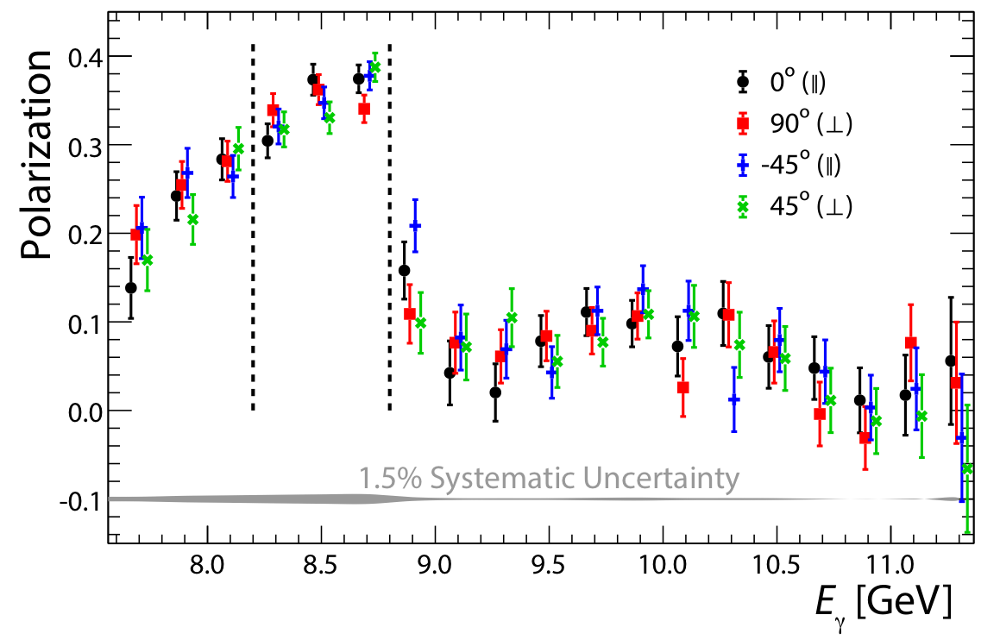
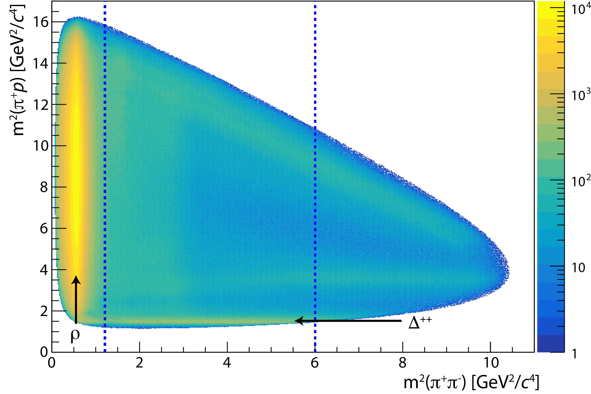
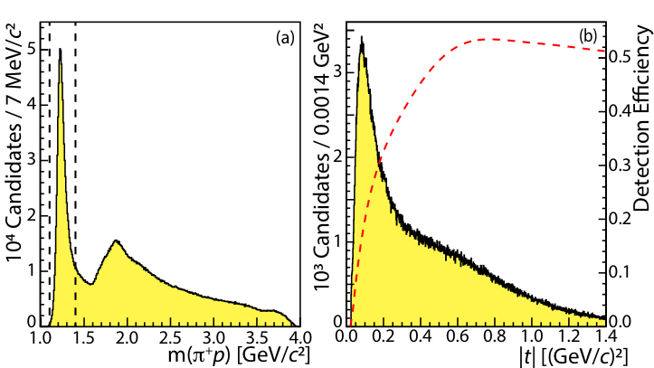
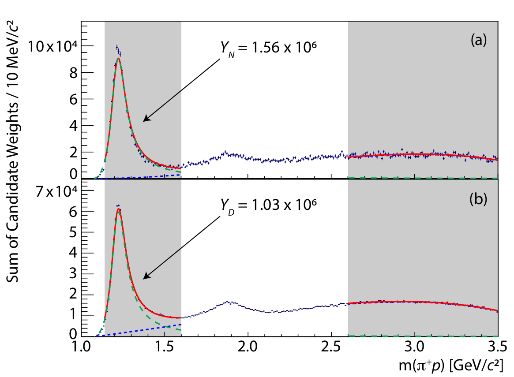
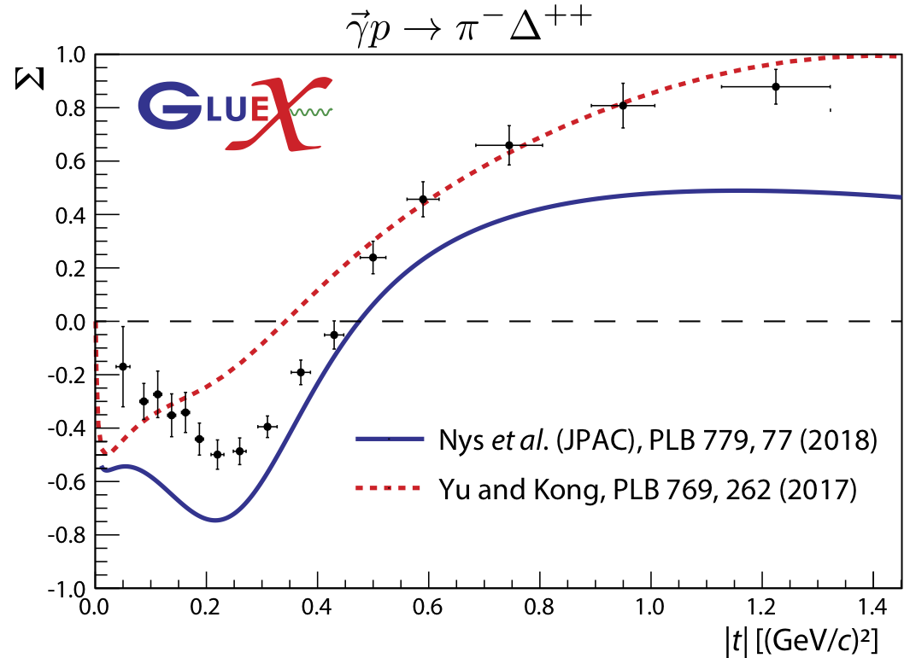

Measurement of beam asymmetry for $\pi^-\Delta^{++}$ photoproduction on the proton at $E_\gamma$=8.5 GeV
Abstract:
We report a measurement of the $\pi^-$ photoproduction beam asymmetry for the reaction $\vec{\gamma} p \rightarrow \pi^- \Delta^{++}$ using data from the GlueX experiment in the photon beam energy range 8.2-8.8 GeV. The asymmetry $\Sigma$ is measured as a function of four-momentum transfer $t$ to the $\Delta^{++}$ and compared to phenomenological models. We find that $\Sigma$ varies as a function of $t$ negative at smaller values and positive at higher values of $|t|$. The reaction can be described theoretically by $t$-channel particle exchange requiring pseudoscalar, vector, and tensor intermediaries. In particular, this reaction requires charge exchange, allowing us to probe pion exchange and the significance of higher-order corrections to one-pion exchange at low momentum transfer. Constraining production mechanisms of conventional mesons may aid in the search for and study of unconventional mesons. This is the first measurement of the process at this energy.Journal: Phys. Rev. C103, 022201 (2021)
arXiv: arXiv:2009.07326
HEPdata: link
|

Phys. Rev. C103, 022201 (2021): downloads png pdf |
Figure 1:
The degree of linear polarization for four different orientations of diamond radiator as a function of beam photon energy, as measured by the TPOL. Events between the dashed lines (8.2 GeV$< E_\gamma <$8.8 GeV) are analyzed. (Data points are slightly offset for clarity.) |
|

Phys. Rev. C103, 022201 (2021): downloads png pdf |
Figure 2:
Dalitz plot of products of the reaction $\vec{\gamma}p\rightarrow\pi^+\pi^-p$. Candidates between dashed lines are selected. Data shown are not efficiency corrected. |
|

Phys. Rev. C103, 022201 (2021): downloads png pdf |
Figure 3:
(a) The $\pi^+p$ invariant mass distribution of events satisfying all selection criteria. In addition to the $\Delta^{++}$, excited states around 1.9 GeV/$c^2$ are visible. (b) The distribution of $|t|$ for candidates between the dashed lines in panel (a) and the detection efficiency as a function of $|t|$. |
|

Phys. Rev. C103, 022201 (2021): downloads png pdf |
Figure 4:
Fit to (a) numerator $N$ and (b) denominator $D$ defined in Eqs. 5a and 5b, in the extended range $0.4$ (GeV/$c)^2<|t|<1.4$ (GeV/$c$)$^2$. The $\Delta^{++}$ component is shown in green (dashed), polynomial background in blue (dotted), and total fit in red. Data are fit in the shaded regions only, the integral of the green (dashed) curve in the lower shaded region is used to determine the yields $Y_N$ and $Y_D$. |
|

Phys. Rev. C103, 022201 (2021): downloads png pdf |
Figure 5:
Beam asymmetry $\Sigma$ vs. $|t|$ compared to theoretical predictions. The error bars indicate the statistical and systematic uncertainties combined in quadrature. |
{kind=link}
{kind=link}
{kind=link}
{kind=link}
{kind=link}